Akamura
Akamura · Fukuoka
Akamura
Highlighted on the Fukuoka map.
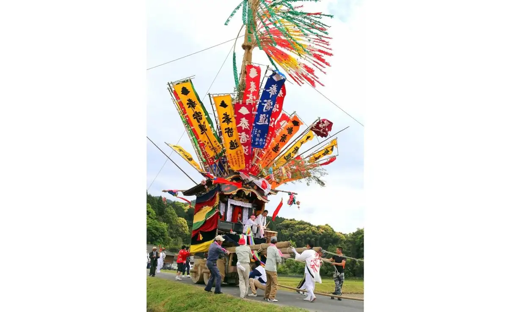
Dining
村のレストラン モクモク
Mura No Resutoran Mokumoku
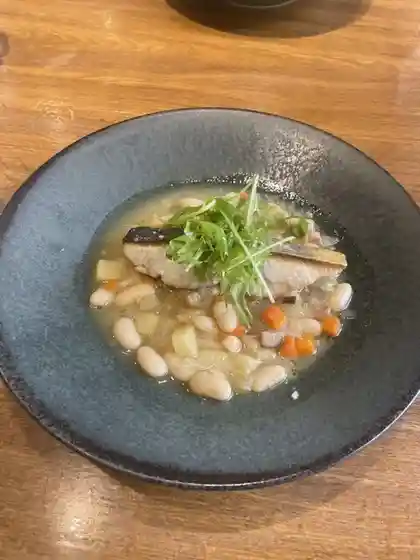
赤村特産物センター
Akamura Tokusanbutsu Sentaa
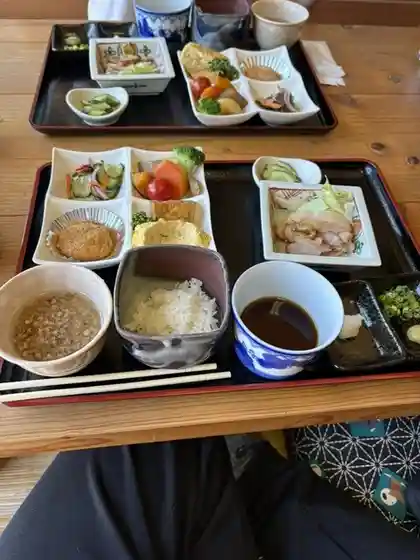
古民家カフェ・そば処 みどり
古民家カフェ・そば処 みどり
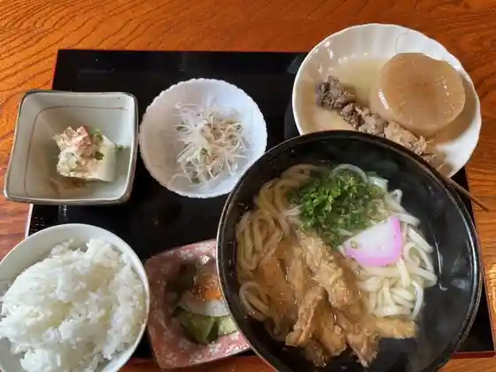
うどん亀
Udon Kame
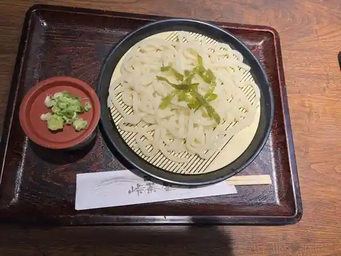
味処 峠茶屋
Ajidokoro Touge Chaya
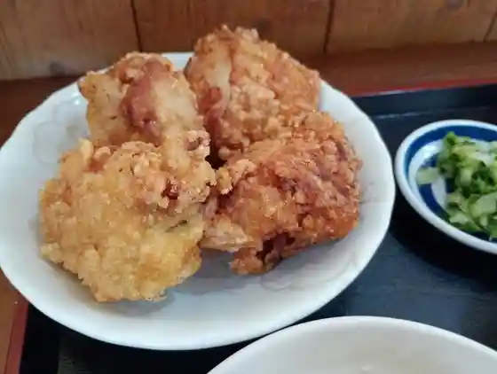
あかの駅
Akano Eki
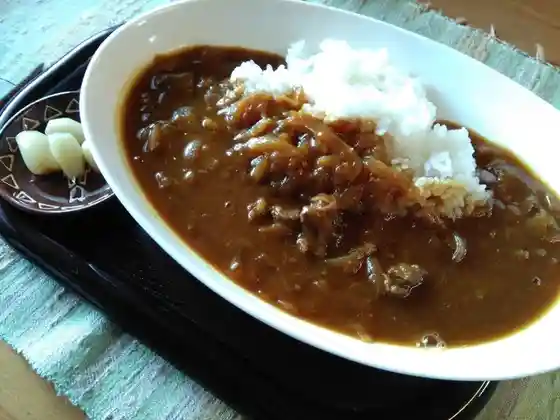
ログハウス喫茶 百笑
Roguhausu Kissa Hyaku Warai
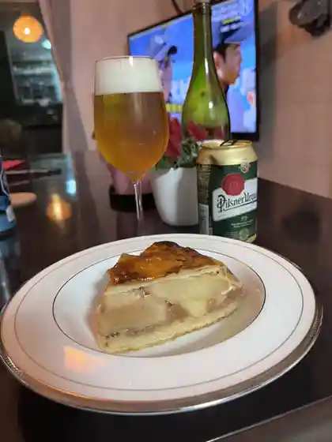
菓子工房 わらべ
Kashi Koubou Warabe
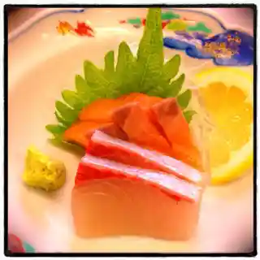
ほたる
Hotaru
源じいの森温泉 大広間
Gen Jiino Mori Onsen Oohiroma
焼鳥御免ね
Yakitori Gomen Ne
村の小さなお弁当屋さん Naturelle
Naturelle
風の杜CAN工房
Kaze No Mori Can Koubou
天ぷら 屯倉
Tenpura Miyake
おやすみどころ 峰やしき
Oyasumidokoro Mine Yashiki
ちょっと
Chotto
くれよん
Kureyon
FRONTIER SPIRITS
FRONTIER SPIRITS
Nonohanakai Bakery
Nonohanakai Bakery
Sushi Kappo Plastering Hee
Sushi Kappo Plastering Hee
Kametachigui Udon
Kametachigui Udon
Wind Mori Can Kobo
Wind Mori Can Kobo
Sights
Ganseki Yama no Ochi Nai Iwa
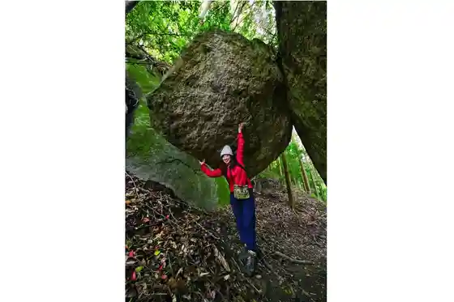
Akamura Tokusambutsu Center
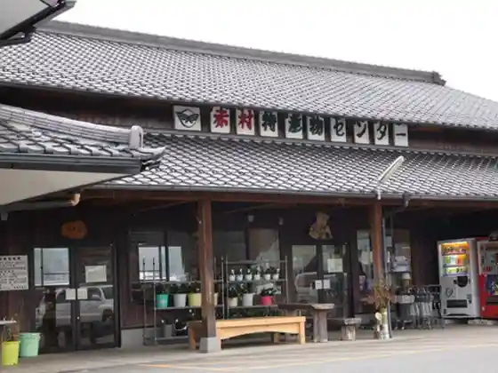
Nature Gakushu Village Gen Jii Forest (Gen Jii no Mori Onsen)
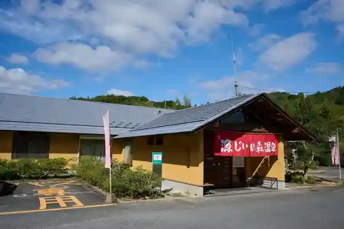
Gen Jii Forest
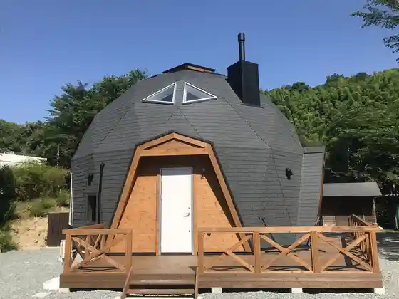
Akamura Komyo Hachimanjinja to Ware Shika Hachiman Shrine no Shinko Matsuri
Akamura Jumin Center Shuhen Cherry Blossoms